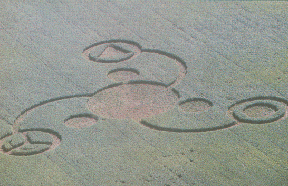
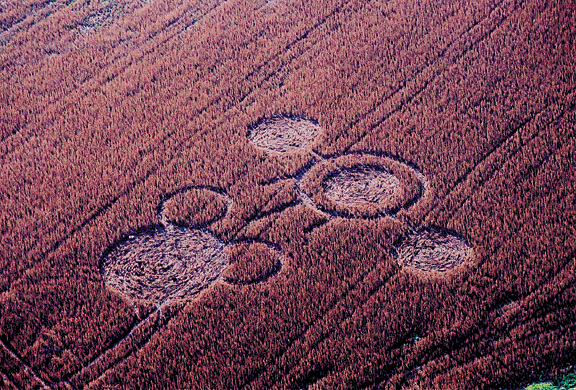

Object photographed 11/2/03 at
Pioneer Park, Independence/Covington, KY



- STRANGEEVENT - Morehead, Kentucky
Frightening screams heard, police search, odd lightreported - 11/21/03
- UFOSIGHTING: Trotwood, OH - Oct. 25, 2003
Filed by investigator Donnie Blessing
- Objectsphotographed 11/02 near Cincinnati, OH - Covington, KY
Also report of UFOs seen near Harrison Ave., WesternHills - Oct. 29
- Ohio'sNew Crop Circle and Recent UFO Activity
- RossCty, Ohio Busy with sightings - Huntsburg, Ohio UFO video
Chillicothe Gazette article - NOTE: some reportsmay be due to FLARES - video could be MOON
- UFOSIGHTING: Hamilton, OH (Oct. 15, 2003)
Upside down diamond, rotating mutli-colored lights - "DeerSurveillance" Photo Snaps Ohio Mystery
Ellsberry, OH (Brown County), Sept. 23, 2003
- UFOSIGHTING: Franklin, OH (Sept. 24, 2003)
Pattern of green flashing lights reported to WrightPatterson Air Force Base
- ANOTHEROHIO CROP FORMATION!
Highland County Press- Sept. 28, 2003
- CROPCIRCLE in Flemingsburg, Kentucky (Fleming County)
Photographs courtesy of Charles Mattox, FlemingsburgGazette
- "MonsterObject" said to roam Ohio skies
Sighting of massive object, Ghanna, OH (FranklinCty.), Sept. 22, 2003
- OhioSightings Continue: Tremendous Object Alleged in Southern Ohio
Adams County, Sept. 13, 2002 - Triangular UFO withsequence of flashing lights
- Increasein Ohio UFO Activity - Canton, Akron & Proctorville, OH
- News article from Huntington,WVA Herald Dispatch + Bainbridge, OH report
- UPDATE:Proctorville mystery lights may be 'restaurant' skylight
- CROPFORMATION at Peebles, Ohio - pictures
Jeffrey Wilson: "One of the most intricate of cropcircle formations ever found in the United States"
- UFOSIGHTING: August 22, 2002 - Hillsboro, Ohio
Rotating white lights (report by Donnie Blessing)
- SiepMound crop formation said to be 'Hoax'
Very 'poor quality,' likely copy cat - report byLINDA MOULTON HOWE
- OhioClaimant wants money for UFO video
Quality, clarity and content said 'poor'
- UFOSIGHTING: June 2, 2003 - West Chester, Ohio
with report of powerfailure (Report by Donnie Blessing)
- UFOSIGHTING: MONROE, OHIO (Butler County), June 6, 2003
Report by Donnie Blessing